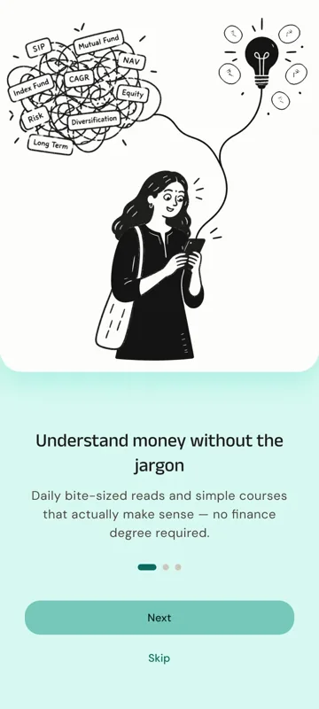
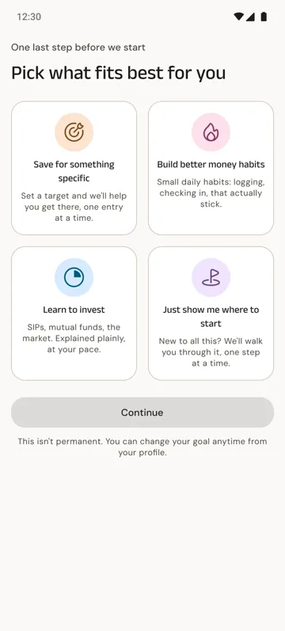
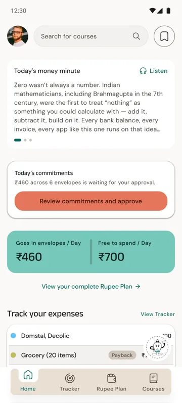
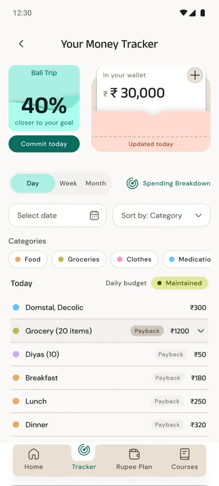
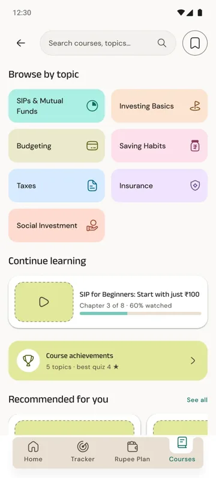
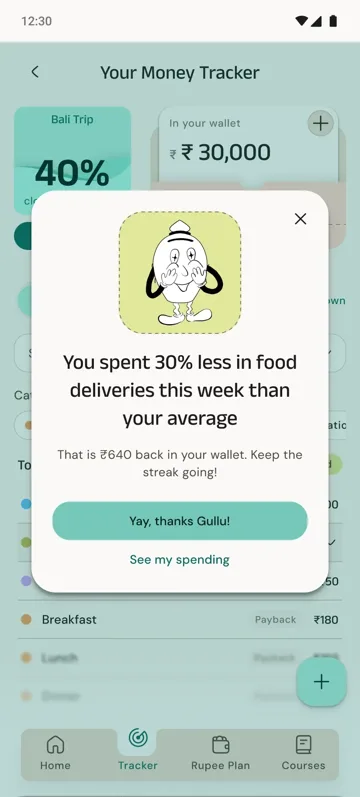

Case study
FinEducation
An inclusive personal-finance app for people who manage household money every day but feel shame or anxiety around money conversations.






The problem
Most money apps assume a salary, a spreadsheet brain and zero embarrassment. The people I designed for run a household’s money daily, yet feel judged the moment an app shows a red number.
What I did
I ran UX research and mapped user flows in FigJam: one shared onboarding, then four goal paths (saving, healthier habits, investing basics, and “just show me where to start”). I designed end-to-end wireframes for the Tracker, Rupee Plan and Courses journeys, then built a Material Design 3 based system with custom colour roles, type and radius.
Shame-free decisions
Weekly celebration pop-ups instead of always-on warnings, a “seedling” tier instead of a failed month, and supportive copy such as “Revisit weak spots”.
Hand-drawn illustration
I drew Gullu, the Gullak mascot, who shows up once a week to celebrate what went right.
Read the full case study on Behance
The research decisions and outcomes are in details on Behance, click on the button below to read it in full
see it on Behance →